Пошаговое руководство. Создание кнопки с помощью Microsoft Expression Blend
В этом пошаговом руководстве пошагово продемонстрирует процесс создания WPF настраиваемая кнопка, с помощью Microsoft Expression Blend.
Important
Microsoft Expression Blend работает путем создания Язык XAML , который затем компилируется для получения исполняемой программы. Если работать с Язык XAML напрямую, есть другой Пошаговое руководство, которое создает то же приложение, как это, используя Язык XAML с Visual Studio, а не в Blend. См. в разделе Создание кнопки с помощью XAML Дополнительные сведения.
На следующем рисунке настраиваемая кнопка вы создадите.

Преобразование фигуры в кнопку
В первой части этого пошагового руководства вы создадите пользовательский вид настраиваемой кнопки. Чтобы сделать это, сначала преобразуйте прямоугольник к кнопке. После этого добавить дополнительные фигуры к шаблону кнопки, создание более сложных внешнего вида кнопки. Почему бы не начать с обычной кнопки и ее настраивать? Поскольку кнопка имеет встроенные функции, не требуется; для пользовательских кнопок проще начать с прямоугольника.
Чтобы создать новый проект в Expression Blend
Запустите Expression Blend. (Щелкните запустить, пункты все программы, пункты Microsoft Expression, а затем нажмите кнопку Microsoft Expression Blend.)
Разверните приложение, при необходимости.
В меню Файл выберите пункт Создать проект.
Выберите стандартное приложение (.exe).
Назовите проект
CustomButtonи нажмите клавишу ОК.
На этом этапе имеется пустой WPF проекта. Можно нажать F5, чтобы запустить приложение. Как можно догадаться, приложение состоит из пустое окно. Затем создайте прямоугольник с закругленными углами и преобразовать его в кнопку.
Преобразуемый прямоугольник к кнопке
Задайте для свойства фона окна на черный. Выберите окно, нажмите кнопку вкладка "Свойства" и задайте Background свойства
Black.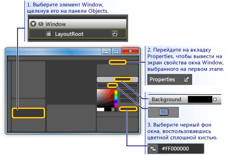
Нарисуйте прямоугольник приблизительного размера кнопки в окне: Выберите прямоугольник на панели инструментов слева и перетащите прямоугольник в окне.
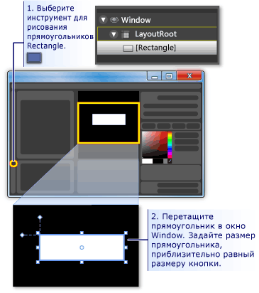
Скруглите углы прямоугольника: Перетащите контрольные точки прямоугольника или непосредственная установка RadiusX и RadiusY свойства. Задайте значения свойств RadiusX и RadiusY до 20.
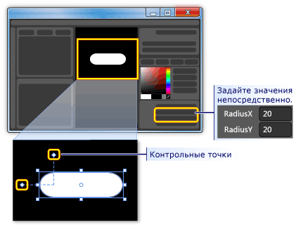
Измените прямоугольник в кнопке: Выберите прямоугольник. На средства меню, щелкните создать кнопку.
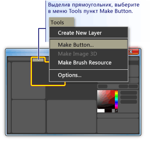
Укажите область стиля или шаблона: Откроется диалоговое окно следующим образом.
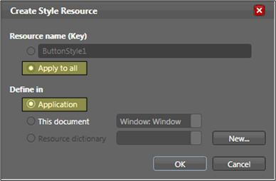
Для имя ресурса (ключ) выберите применить ко всем. Это сделает полученного стиля и шаблона кнопки, которые применяются ко всем объектам, которые являются кнопками. Для определить ввыберите приложения. Это сделает полученного стиля и шаблона кнопки имеют область видимости отказа всего приложения. Этот шаблон используется при задании значений в этих двух полей, стиля и шаблона применяются ко всем кнопкам в приложении и любой кнопки, создаваемые в приложении, по умолчанию.
Изменение шаблона кнопки
Теперь у вас есть прямоугольник, который был изменен на кнопке. В этом разделе вы измените шаблон кнопки и настроить его внешний вид.
Чтобы изменить шаблон кнопки, чтобы изменить внешний вид кнопки
Перейдите в представление редактирования шаблона: Чтобы настроить внешний вид кнопки, необходимо изменить шаблон кнопки. Этот шаблон был создан в результате преобразования прямоугольника в кнопку. Чтобы изменить шаблон кнопки, правой кнопкой мыши и выберите изменить части элемента управления (шаблон) и затем изменить шаблон.
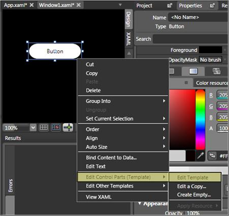
В редакторе шаблона, обратите внимание на то, что теперь делятся на кнопки Rectangle и ContentPresenter. ContentPresenter Используется для представления содержимого кнопки (например, строка «Кнопка»). Оба прямоугольника и ContentPresenter располагаются внутри Grid.
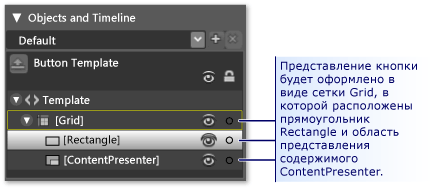
Измените имена компонентов шаблона: Щелкните правой кнопкой мыши прямоугольник в перечне шаблона, изменение Rectangle имя из «[прямоугольник]» на «скопировав outerRectangle» и измените «[ContentPresenter]» на «myContentPresenter».
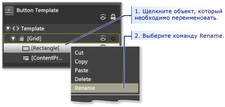
ALTER прямоугольника, так как это пустой внутри (например, кольцо): Выберите скопировав outerRectangle и задайте Fill «Transparent» и StrokeThickness до 5.
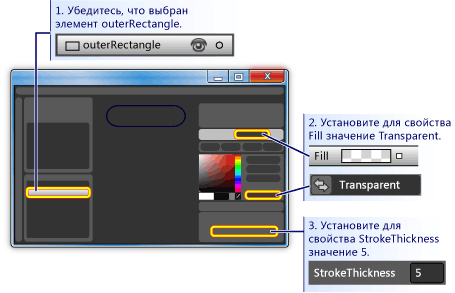
Затем установите Stroke все, что шаблон будет цвету. Для этого щелкните небольшой белый квадрат рядом Strokeвыберите CustomExpressionи введите «{TemplateBinding фона}» в диалоговом окне.
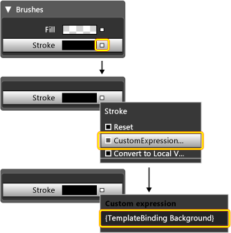
Создайте внутренний прямоугольник: Теперь создайте другого прямоугольника (назовите его «innerRectangle») и разместите его симметрично внутри скопировав outerRectangle . Для такой работы может потребоваться установить масштаб увеличить кнопку в области редактирования.
Note
Прямоугольник может выглядеть отличается от того, на рисунке (например, он может иметь скругленные углы).
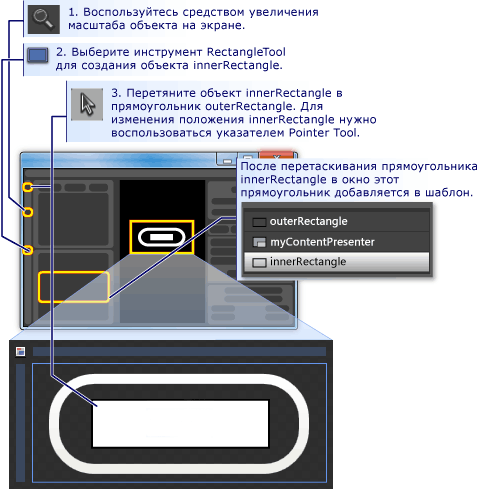
Переместите вверх ContentPresenter: На этом этапе вполне возможно, что текст «Button» не будет отображаться больше. Если Да, это обусловлено innerRectangle — на основе myContentPresenter. Чтобы устранить эту проблему, перетащите myContentPresenter ниже innerRectangle. Изменить положение прямоугольников и myContentPresenter чтобы выглядеть аналогично приведенному ниже.
Note
Кроме того, можно также разместить myContentPresenter в верхней части, щелкнув его и нажав клавишу отправить Далее.
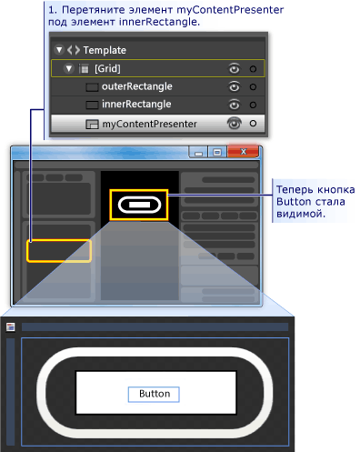
Изменение внешнего вида innerRectangle: Задайте RadiusX, RadiusY, и StrokeThickness значения до 20. Кроме того, задайте Fill фона для шаблона с помощью пользовательского выражения «{TemplateBinding фона}») и задайте Stroke для «прозрачный». Обратите внимание, что параметры для Fill и Stroke из innerRectangle противоположны для скопировав outerRectangle.
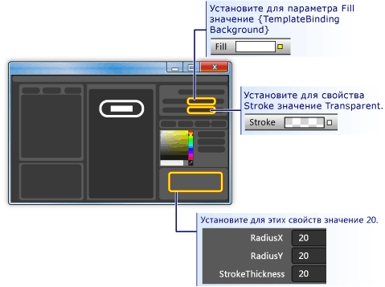
Добавьте прозрачный слой в верхней части: Заключительная часть настройки внешнего вида кнопки является добавление прозрачный слой в верхней части. Этот прозрачный слой состоит из третьего прямоугольника. Так как прозрачный будут рассмотрены всю кнопку, прозрачный прямоугольник аналогична по измерения, которые необходимо скопировав outerRectangle. Таким образом, создать прямоугольник, просто копию скопировав outerRectangle. Выделите скопировав outerRectangle и используйте сочетание клавиш CTRL + C и CTRL + V для создания копии. Назовите этот новый прямоугольник «glassCube».
При необходимости изменить положение glassCube: Если glassCube — еще не находится, чтобы он охватывал весь кнопки, перетащите его в нужное место.
Присвойте glassCube немного другой форме по сравнению скопировав outerRectangle: Изменение свойств glassCube. Начните с изменения RadiusX и RadiusY свойства до 10 и StrokeThickness до 2.
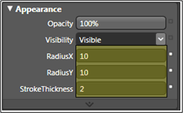
Сделайте glassCube стекла следующий вид: Задайте Fill для стеклянного вида с помощью линейного градиента, который составляет 75% непрозрачный и переключается между белым и прозрачным более чем 6 примерно равномерно расположенных интервалов времени. Это, какое значение позиции градиента:
Ступень градиента 1: Белый цвет с альфа-значение 75%
Ограничение градиента 2: Прозрачный
Ограничение градиента 3: Белый цвет с альфа-значение 75%
Ограничение градиента 4: Прозрачный
Ограничение градиента 5: Белый цвет с альфа-значение 75%
Ограничение градиента 6: Прозрачный
При этом создается вид «волнистой» прозрачного стекла.
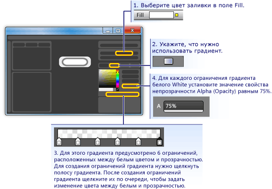
Скрыть прозрачный слой: Теперь, когда вы видите, как выглядит стеклянного слоя, перейдите в внешний вид области из панель "Свойства" и установить прозрачность 0%, чтобы скрыть его. В разделах мы будем использовать триггеры свойств и событий для отображения и управления прозрачный слой.
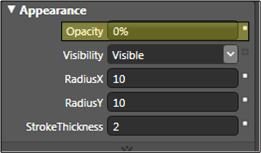
Настройте поведение кнопки
На этом этапе вы уже настроили представление кнопки, изменив его шаблона, но кнопка не реагирует на действия пользователя как обычные кнопки (например, изменение внешнего вида при наведении, получает фокус и щелкнув.) В следующих двух процедурах показано как построить таким поведением, как их в настраиваемой кнопки. Мы начнем с простых триггеров свойства и затем добавление триггеров событий и анимации.
Чтобы задать триггеры свойств
Создайте новый триггер свойства: С помощью glassCube , щелкните + свойство в триггеры панели (см. в разделе к рисунку, который следует за следующий шаг). Это создает триггер свойства с триггером свойства по умолчанию.
Создайте свойство IsMouseOver, используемое триггером: Измените значение свойства на IsMouseOver. В результате при активации триггера свойств IsMouseOver свойство
true(при наведении указателя мыши на кнопку мыши).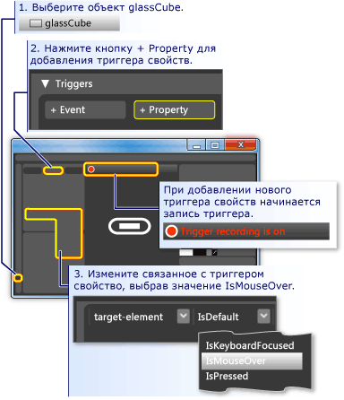
Непрозрачность 100% для glassCube триггеров IsMouseOver: Обратите внимание, что записи триггера (см. предыдущий рисунок). Это означает, что любые изменения, внесенные в значения свойств glassCube во время записи станет действие, происходящее при IsMouseOver является
true. Во время записи, изменить Opacity из glassCube до 100%.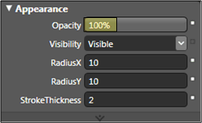
Вы создали первый триггер свойства. Обратите внимание, что панель "триггеры" записанные редактора Opacity изменен на 100%.
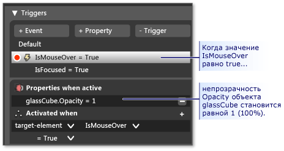
Нажмите клавишу F5, чтобы запустить приложение и наведите указатель мыши над и кнопки включения и выключения. Вы должны увидеть прозрачный слой отображается, когда вы Наведение указателя мыши для кнопки и исчезают, когда указатель покидает.
Изменение значения штриха триггеров IsMouseOver: Давайте свяжем некоторые другие действия с IsMouseOver триггера. Во время записи, переключение сделанный выбор из glassCube для скопировав outerRectangle. Затем установите Stroke из скопировав outerRectangle на пользовательское выражение «{DynamicResource {x: Static SystemColors.HighlightBrushKey}}». Этот параметр задает Stroke чтобы типичное выделите цвет кнопок. Нажмите клавишу F5, чтобы увидеть результат, когда указатель мыши находится над кнопкой.
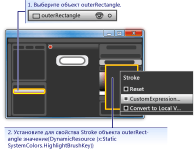
Размытый текст триггеров IsMouseOver: Давайте свяжем одного дополнительные действия для IsMouseOver триггер свойства. Сделайте содержимое кнопки быть немного нечеткими, когда появляется прозрачный над ней. Чтобы сделать это, мы применяем размытия BitmapEffect для ContentPresenter (myContentPresenter).
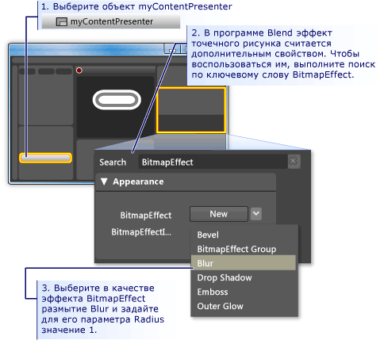
Note
Для возврата панель "Свойства" обратно которое он имел до вас поиск BitmapEffect, удалите текст из поле поиска.
На этом этапе мы использовали триггер свойства с несколькими связанными действиями для создания поведения для, когда указатель мыши входит и покидает область кнопок. Другим обычным поведением для кнопки — Выделить с фокусом (например, после щелчка). Мы можем добавить такое поведение, добавив еще один триггер свойства для IsFocused свойство.
Создание триггера свойств для IsFocused: Используя ту же процедуру, что и для IsMouseOver (см. первый шаг в этом разделе), создайте другой триггер свойства для IsFocused свойство. Хотя записи триггера, добавьте следующие действия в триггер:
Завершающем этапе в этом пошаговом руководстве мы добавим анимации к кнопке. Эти анимации будет вызвано событиями, в частности, MouseEnter и Click события.
Использование триггеров событий и анимации для обеспечения интерактивности
Создание триггера события MouseEnter: Добавьте новый триггер события и выберите MouseEnter как событие для использования в триггере.
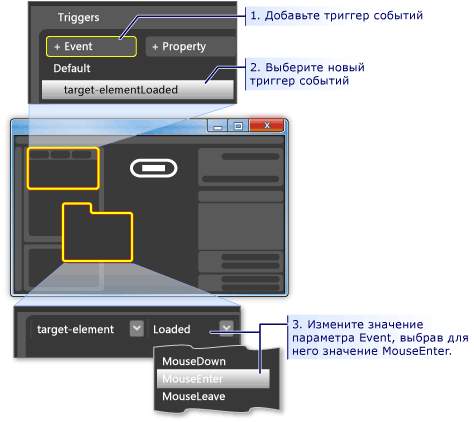
Создайте временную шкалу анимации. Теперь необходимо связать временную шкалу анимации для MouseEnter событий.
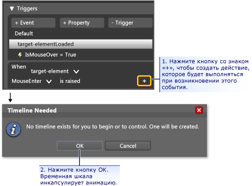
После нажатия клавиши ОК для создания новой временной шкалы, временная шкала отображается и «Временная шкала записи» отображается в панели конструктора. Это означает, что мы можем запустить записи изменений свойств на временной шкале (изменения свойств анимации).
Note
Может потребоваться изменить размер окна и/или панели для просмотра отображения.
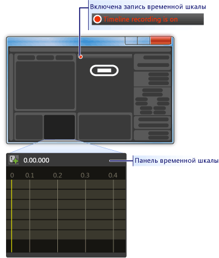
Создание опорного кадра: Для создания анимации, выделите объект, который вы хотите анимировать, создание двух или более опорные кадры на временной шкале, а также для этих опорных кадров, задайте значения свойств, анимация для интерполяции. Следующий рисунок поможет выполнить создание опорного кадра.
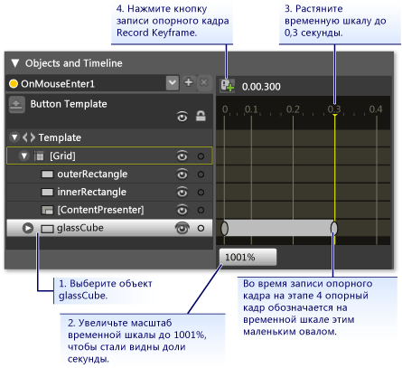
Сжать glassCube в данного опорного кадра: Второй ключевой кадр выбран, уменьшить размер glassCube 90 процентов от его полный размер с помощью преобразования размер.
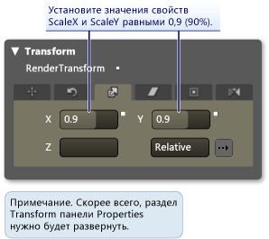
Нажмите клавишу F5 для запуска приложения. Наведите указатель мыши на кнопку. Обратите внимание, что прозрачный слой сжимается поверх кнопки.
Создайте еще один триггер события и свяжите с ним другой анимации: Давайте добавим одну анимацию. Используйте аналогичную процедуру, чтобы вы использовали для создания предыдущей анимации триггера события:
Создать новый триггер события с помощью Click событий.
Связать новую временную шкалу с Click событий.
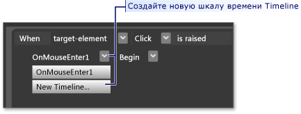
Для этой временной шкалы создайте двумя опорными кадрами, один на 0,0 секунде, а второй на 0.3 секунде.
Ключевой кадр на 0,3 секунде, установите угол поворота преобразования до 360 градусов.
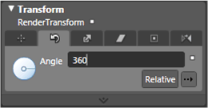
- Нажмите клавишу F5 для запуска приложения. Нажмите кнопку. Обратите внимание, что прозрачный слой вращается.
Заключение
Завершена настройка кнопки. Вы сделали, это с помощью шаблона кнопки, которая была применена ко всем кнопкам в приложении. Если оставить режим редактирования шаблонов (см. следующий рисунок) и создать дополнительные кнопки, вы увидите, что они выглядят и ведут себя подобно настраиваемой кнопки, а не как кнопка по умолчанию.
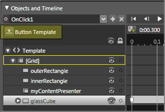
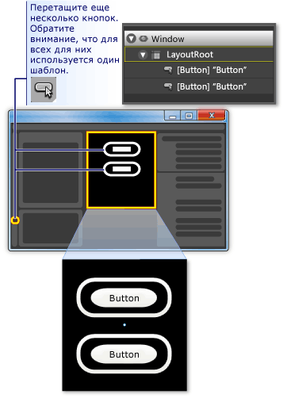
Нажмите клавишу F5 для запуска приложения. Нажмите кнопки и обратите внимание на то, как все они ведут себя одинаково.
Помните, хотя Настройка шаблона, установить Fill свойство innerRectangle и Stroke свойство скопировав outerRectangle шаблона фона ({} TemplateBinding фона}). По этой причине при установке цвет фона отдельных кнопок, фон будет использоваться для соответствующих свойств. Попробуйте изменить фон сейчас. На рисунке ниже используются различные градиенты. Таким образом несмотря на то, что шаблон полезен для общей настройки элементов управления, таких как кнопки, элементы управления с помощью шаблонов можно по-прежнему изменить чтобы они отличались друг от друга.
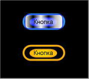
В заключение процедуру настройки шаблона кнопки вы узнали, как для выполните следующие действия в Microsoft Expression Blend:
Настройте внешний вид элемента управления.
Установка триггеров свойств. Триггеры свойств очень полезны, так как они могут использоваться для большинства объектов, а не только для элементов управления.
Установка триггеров событий. Триггеры событий очень полезны, так как они могут использоваться для большинства объектов, а не только для элементов управления.
Создание анимаций.
Создание градиентов, добавление BitmapEffects, использование преобразований и набор основных свойств объектов.